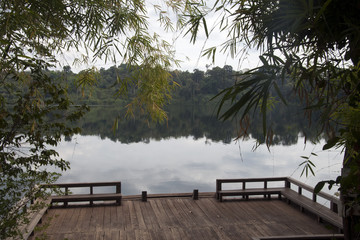
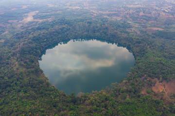
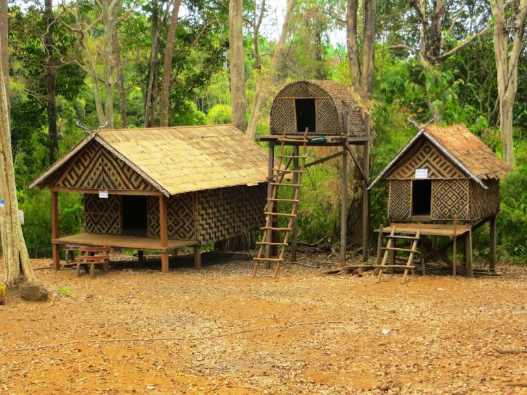
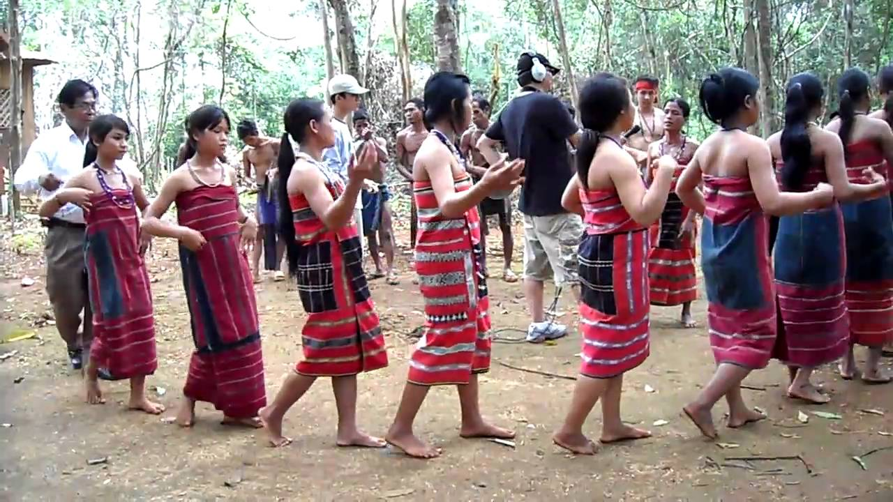
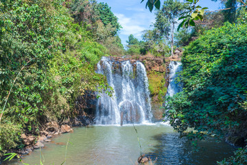
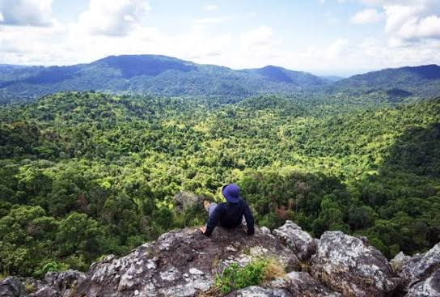

បឹង
បឹងយក្សឡោម
បឹងភ្នំភ្លើងដែលព័ទ្ធជុំវិញដោយព្រៃ នៅភាគខាងត្បូងក្រុងបានលុង មានផ្លូវដើរជុំវិញ និងតំបន់ហែលទឹកដែលបានកំណត់។
ស្វែងរកទីកន្លែង
RATANAKIRI • CAMBODIA
ស្វែងរកទឹកជ្រោះ បឹងភ្នំភ្លើង និងទេសភាពព្រៃភ្នំ ព្រមទាំងស្វែងយល់ពីសហគមន៍ជនជាតិដើមដែលរស់នៅក្នុងខេត្តភាគឦសាននៃប្រទេសកម្ពុជានេះ។
ទឹកជ្រោះ បឹង ព្រៃឈើ និងទេសភាពភ្នំ។
តន្ត្រី របាំ ពិធីបុណ្យ ផ្ទះ និងសិប្បកម្ម។
ស្វែងយល់ពីសហគមន៍ចម្រុះ និងមរតកវប្បធម៌ដែលនៅរស់រវើក។
គ្រឿងផ្សំ ផ្លែឈើ គ្រាប់ស្វាយចន្ទី កាហ្វេ និងការចម្អិនម្ហូបក្នុងតំបន់។
រូបថតពិតពីខេត្តរតនគិរី។
ស្វែងរកទីកន្លែងសំខាន់ៗ និងរៀបចំដំណើរដោយការគោរព។

ព្រៃឈើ ទេសភាពខ្ពង់រាប និងសហគមន៍ជនជាតិដើមចម្រុះ គឺជាផ្នែកនៃជីវិតរតនគិរី។ សូមស្វែងយល់ដោយចិត្តចង់ដឹង ស្តាប់សំឡេងអ្នកក្នុងតំបន់ និងគោរពការណែនាំរបស់សហគមន៍។

សហគមន៍គ្រឹង ទំពួន ចារ៉ាយ ប្រៅ និងកាវែត គឺជាផ្នែកមួយនៃប្រជាជននៅរតនគិរី។ សហគមន៍នីមួយៗមានប្រវត្តិ និងអត្តសញ្ញាណផ្ទាល់ខ្លួន ហើយប្រពៃណី និងជីវិតប្រចាំថ្ងៃខុសៗគ្នាតាមគ្រួសារ និងភូមិ។
ស្វែងយល់តាមរយៈសំឡេងសហគមន៍ និងមគ្គុទ្ទេសក៍ក្នុងតំបន់។ រូបថតមិនអាចជំនួសការសុំការអនុញ្ញាត ឬការស្តាប់អ្នកដែលមានក្នុងរូបបានទេ។
ស្វែងយល់ពីសហគមន៍
បឹងភ្នំភ្លើងដែលព័ទ្ធជុំវិញដោយព្រៃ នៅភាគខាងត្បូងក្រុងបានលុង មានផ្លូវដើរជុំវិញ និងតំបន់ហែលទឹកដែលបានកំណត់។
ស្វែងរកទីកន្លែង
ទឹកជ្រោះក្នុងតំបន់ព្រៃនៅភាគអាគ្នេយ៍ក្រុងបានលុង។ សូមពិនិត្យស្ថានភាពផ្លូវ និងទឹកក្នុងតំបន់មុនទៅទស្សនា។
ស្វែងរកទីកន្លែង
តំបន់ការពារធម្មជាតិដ៏ធំ ដែលមានព្រៃឈើ និងទេសភាពខ្ពង់រាបនៅភាគឦសានកម្ពុជា។ សូមរៀបចំដំណើរទៅតំបន់ឆ្ងាយដោយមានការណែនាំពីអ្នកក្នុងតំបន់។
មើលផែនទីផ្សារបានលុងជាកន្លែងស្វែងយល់ពីផលដំណាំតាមរដូវ និងការទិញម្ហូបប្រចាំថ្ងៃ។ សូមសួរអ្នកលក់មុនថតរូប។
ស្វែងយល់ពីម្ហូបអ្វីដែលមានលក់អាចផ្លាស់ប្ដូរតាមរដូវ។ ម្ចាស់ផ្ទះ និងអ្នកលក់ក្នុងតំបន់អាចប្រាប់អ្នកអំពីផលិតផលស្រស់ៗ។
មើលមគ្គុទ្ទេសក៍ម្ហូបម្ហូប និងប្រពៃណីចម្អិនខុសៗគ្នាតាមសហគមន៍ និងគ្រួសារ។ សូមធ្វើតាមការណែនាំរបស់ម្ចាស់ផ្ទះ និងសួរមុនថត ឬកត់ត្រាអំពីអាហារ។
ស្វែងយល់ពីវប្បធម៌